Questions and options are NTA’s own images; the green option is NTA’s final key. Every solution below was written by Claude and checked against NTA’s final key. It is not NTA’s solution. Please mark anything unclear or wrong.
Left out of the bank: incomplete in NTA paper (NTA).
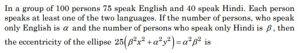
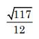
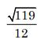
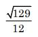
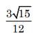
Hint 1: Everyone speaks at least one language. How many speak both? Then who speaks only one?
Hint 2: Both = 75 + 40 − 100 = 15, so α = 75 − 15 and β = 40 − 15. Write the ellipse as x2/(α/5)2 + y2/(β/5)2 = 1.
What this tests: Sets (counting) and the eccentricity of an ellipse
If this felt hard: The tricky part is turning the word problem into α and β; a Venn diagram helps. Revise Sets and Conic Sections (ellipse).
Left out of the bank: dropped (NTA).
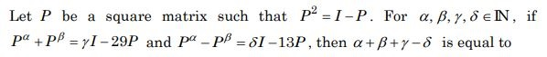
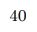
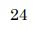
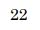
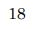
Hint 1: P2 = I − P lets you write every power of P as (number)I + (number)P. Make a small table.
Hint 2: P3 = 2P − I, P4 = 2I − 3P, P5 = 5P − 3I, P6 = 5I − 8P, ... The P-coefficients are Fibonacci numbers with alternating signs.
What this tests: Powers of a matrix from a matrix equation
If this felt hard: Building a table of powers step by step is the safe way. Revise Matrices.
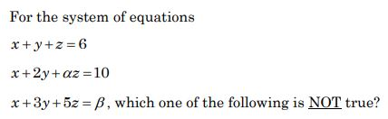
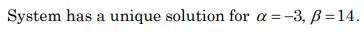
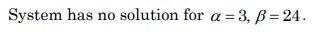
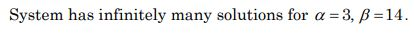
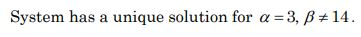
Hint 1: When does this system fail to have a unique solution? Look at the coefficient determinant.
Hint 2: Det = 6 − 2a, which is zero for a = 3. Then subtract equations to test consistency.
What this tests: Consistency of a 3 × 3 linear system
If this felt hard: Remember the question asks for the statement that is NOT true. Revise Determinants (consistency of equations).
Note: The equations use a while the options write α; read them as the same letter.
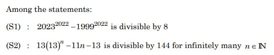
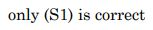
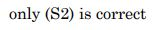
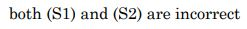
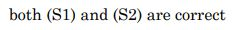
Hint 1: For S1, think about an − bn. For S2, write 13 = 1 + 12 and expand.
Hint 2: an − bn is divisible by a − b. And 13n = (1 + 12)n = 1 + 12n + 144k.
What this tests: Divisibility using the binomial theorem
If this felt hard: Both statements need a standard trick (a − b divides an − bn; expand (1 + 12)n). Revise Binomial Theorem.
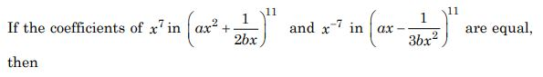
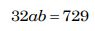
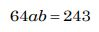
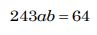
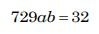
Hint 1: Write the general term of each expansion and find r that gives the required power of x.
Hint 2: First: power 22 − 3r = 7 gives r = 5. Second: power 11 − 3r = −7 gives r = 6.
What this tests: General term of a binomial expansion
If this felt hard: Track the power of x carefully, including the sign of the second term. Revise Binomial Theorem.
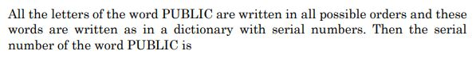
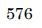
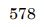
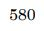
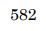
Hint 1: List the letters in dictionary order: B, C, I, L, P, U. Count the words that come before PUBLIC.
Hint 2: Words starting with B, C, I or L: 4 × 5!. Then PB, PC, PI, PL: 4 × 4!.
What this tests: Rank of a word in the dictionary
If this felt hard: A common slip is to forget one block. Write the alphabetical order first. Revise Permutations and Combinations.
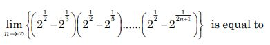
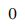
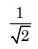
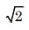
Hint 1: How big is each factor? Is it less than 1?
Hint 2: For k ≥ 1, each factor 21/2 − 21/(2k+1) lies between 21/2 − 21/3 and 21/2 − 1 ≈ 0.414.
What this tests: Limits of products
If this felt hard: Bounding each factor is the key idea. Revise Limits.
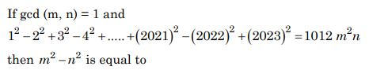
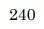
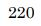
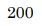
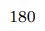
Hint 1: Pair the terms: (2k − 1)2 − (2k)2 = −(4k − 1).
Hint 2: Sum = 20232 − Σk=11011(4k − 1).
What this tests: Sums of squares with alternating signs
If this felt hard: Grouping terms in pairs is the key step. Revise Sequences and Series.
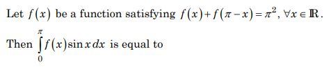
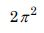
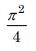
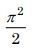
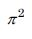
Hint 1: Use the property ∫0π g(x) dx = ∫0π g(π − x) dx.
Hint 2: I = ∫ f(π − x) sin x dx too, so 2I = ∫0π π2 sin x dx.
What this tests: Properties of definite integrals
If this felt hard: Revise the King's property (a + b − x) in Definite Integrals.
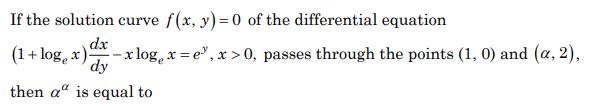
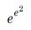
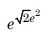
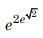
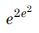
Hint 1: Here x is a function of y. Look for a product whose derivative is (1 + ln x) dx/dy.
Hint 2: Put u = x ln x. Then du/dy = (1 + ln x) dx/dy, so du/dy − u = ey.
What this tests: Linear differential equations by substitution
If this felt hard: Spotting the substitution u = x ln x is the hard step. Revise Differential Equations.
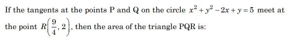
Hint 1: Find the centre and radius, and the length of the tangent from R.
Hint 2: Centre (1, −1/2), r = 5/2. Tangent length L with L2 = S(R). Area of triangle PQR = rL3/(r2 + L2).
What this tests: Tangents from an external point; chord of contact
If this felt hard: Revise the tangent length and the chord-of-contact triangle in Circles.
Hint 1: Break y = |x − 1| + |x − 2| into pieces and sketch it with y = 3.
Hint 2: y = 3 − 2x (x < 1), 1 (1 ≤ x ≤ 2), 2x − 3 (x > 2). It meets y = 3 at x = 0 and x = 3.
What this tests: Area between curves
If this felt hard: A quick sketch makes this a trapezium. Revise Application of Integrals.
Hint 1: A plane through the line of intersection is P1 + λP2 = 0.
Hint 2: (x + y + z − 6) + λ(2x + 3y + 4z + 5) = 0; put in (0, 2, −2) to find λ.
What this tests: Family of planes; distance of a point from a plane
If this felt hard: Revise Three Dimensional Geometry.
Hint 1: Let L meet the given line at a general point B. What does 'parallel to the plane' say about AB?
Hint 2: B = (1 + 2t, 2 + 3t, 3 + 4t). AB must be perpendicular to the normal (2, 1, −3).
What this tests: Lines in space; distance of a point from a line
If this felt hard: Revise Three Dimensional Geometry.
Hint 1: Four points are coplanar when the scalar triple product of three edge vectors from one point is 0.
Hint 2: From A(1, −2, 3): AB = (1, −1, 1), AC = (α, 2, −1), AD = (8, α − 6, 3).
What this tests: Coplanarity of four points
If this felt hard: Revise scalar triple product in Vector Algebra.
Hint 1: Expand the box product using linearity. Which terms vanish?
Hint 2: [a, b + c, a + 2b + 3c] = [a, b + c, 2b + 3c].
What this tests: Scalar triple product
If this felt hard: Revise properties of the scalar triple product.
Hint 1: Count outcomes where all three dice differ.
Hint 2: 6 × 5 × 4 out of 63.
What this tests: Classical probability
If this felt hard: Revise Probability.
Hint 1: Make a truth table, or rewrite p ⇒ q as ∼p ∨ q.
Hint 2: S1 simplifies to ∼p ∨ q. For S2, find one row where it is true.
What this tests: Tautology and contradiction
If this felt hard: Revise Mathematical Reasoning (truth tables).
Note: Mathematical reasoning is no longer in the JEE Main syllabus.
Hint 1: The locus |z − α|2 + |z − β|2 = constant is a circle centred at the midpoint of α and β.
Hint 2: |z − α|2 + |z − β|2 = 2|z − m|2 + |α − β|2/2, with m = (α + β)/2.
What this tests: Loci in the complex plane
If this felt hard: This uses the parallelogram (Apollonius) identity. Revise Complex Numbers.
Hint 1: UNIVERSE has vowels U, I, E, E and consonants N, V, R, S. 'Without repetition' means no letter is used twice.
Hint 2: Choose 2 different vowels from {U, I, E} and 2 consonants from 4, then arrange 4 letters.
What this tests: Selection and arrangement
If this felt hard: Revise Permutations and Combinations.
Note: NTA's 432 reads 'without repetition' as never using a letter twice, so the word cannot contain both E's (allowing EE would add 72, giving 504).
Hint 1: Divide everything by 2019. What series is left?
Hint 2: k = Σr=120 r xr−1 with x = 21/20 (an arithmetico-geometric series).
What this tests: Arithmetico-geometric series
If this felt hard: Revise AGP sums in Sequences and Series.
Hint 1: Find where y' = 0 and check the signs of y at those points.
Hint 2: y' = 5(x4 − 12x2 + 10) = 0 gives x2 = 6 ± √26 (four critical points).
What this tests: Counting real roots using extrema
If this felt hard: Revise Application of Derivatives (maxima, minima).
Hint 1: Write the y-intercept of the tangent at (b, f(b)) in terms of f(b) and f'(b).
Hint 2: c = f(b) − b f'(b), so bc = 3 gives xy − x2y' = 3.
What this tests: Forming a differential equation from a tangent property
If this felt hard: Revise Differential Equations and tangents.
Hint 1: Compose f with itself a few times. Do you see a pattern?
Hint 2: f∘f∘…∘f (m times) = x/(1 + m xn)1/n. Then substitute u = 1 + n xn.
What this tests: Composite functions and limits of integrals
If this felt hard: Revise Integrals (substitution) and Limits.
Hint 1: Two conics cutting at right angles here means they are confocal.
Hint 2: Hyperbola: a2 = b2 = 1/2, e = √2, foci (±1, 0). Ellipse: e = 1/√2.
What this tests: Confocal conics
If this felt hard: Revise Conic Sections (ellipse and hyperbola).
Note: Uses the standard fact that an ellipse and hyperbola cutting orthogonally are confocal; teacher may want to show the slope check.
Hint 1: Rewrite the first line in standard form, then take a general point on each line.
Hint 2: (x − 1)/2 = (y − 2)/3 = (z − 3)/α. Points (1 + 2s, 2 + 3s, 3 + αs) and (4 + 5t, 1 + 2t, βt).
What this tests: Intersecting lines in space
If this felt hard: Notice (2 − y)/(−3) = (y − 2)/3. Revise Three Dimensional Geometry.
Hint 1: Use the mean first: it gives a relation between α and β.
Hint 2: Σf = 40 + α + β, Σfx = 360 + 6α + 12β.
What this tests: Mean and variance of a frequency distribution
If this felt hard: Revise Statistics.
Hint 1: Pair angles that add to 90°: tan 81° = cot 9° and tan 63° = cot 27°.
Hint 2: tan θ + cot θ = 2/sin 2θ.
What this tests: Trigonometric values of special angles
If this felt hard: Revise sin 18° and cos 36° in Trigonometric Functions.
Hint 1: Find u and v from the scale readings. Each distance comes from two readings.
Hint 2: u = 20 cm, v = 80 cm, f = 16 cm. Δu = Δv = 0.2 + 0.2 = 0.4 cm. From 1/f = 1/v + 1/u: Δf/f2 = Δu/u2 + Δv/v2.
What this tests: Error in focal length
If this felt hard: A common slip is to take Δu = 0.2 cm; each length is a difference of two readings. Revise Units and Measurements.
Note: NTA's key (1.70%) counts the least count twice for each distance (two scale readings). Taking Δu = Δv = 0.2 cm would give 0.85% (option 2).
Hint 1: Average velocity = displacement/time. How far apart are A and B, and how long does the arc take?
Hint 2: Angle AOB = 120°: chord = 2R sin 60° = √3R; arc = 2πR/3.
What this tests: Average velocity in circular motion
If this felt hard: Use the chord (displacement), not the arc. Revise Motion in a Plane.
Note: Figure reading: the 120° angle is the angle AOB at the centre.
Hint 1: Use v = u + at.
Hint 2: t = (v − u)/a.
What this tests: Uniformly accelerated motion
If this felt hard: Revise Motion in a Straight Line.
Hint 1: Find ω from the period first.
Hint 2: ω = 2π/T = 2 rad/s; F = mω2r.
What this tests: Centrifugal force
If this felt hard: Revise Laws of Motion (circular motion).
Hint 1: Look for the statement that breaks Kepler's second law.
Hint 2: In an elliptical orbit, the planet moves faster near the sun.
What this tests: Kepler's laws
If this felt hard: Revise Gravitation (Kepler's second law).
Hint 1: How does gravity vary with height h = R/4?
Hint 2: F = W R2/(R + h)2.
What this tests: Variation of g with height
If this felt hard: Use the exact formula, since h is not small. Revise Gravitation.
Hint 1: What happens to the pressure you apply at one end of a closed tube of paste?
Hint 2: Pascal's law: pressure applied to an enclosed fluid is transmitted undiminished.
What this tests: Pascal's law
If this felt hard: Revise Mechanical Properties of Fluids.
Note: Teacher look: toothpaste is not an ideal incompressible fluid; NTA treats it as one.
Hint 1: Use Newton's law of cooling with the average temperature.
Hint 2: (T1 − T2)/t = k((T1 + T2)/2 − T0).
What this tests: Newton's law of cooling
If this felt hard: Revise Thermal Properties of Matter.
Note: The exact exponential law gives the same 28°C here.
Hint 1: How does vrms depend on T?
Hint 2: vrms ∝ √T.
What this tests: RMS speed
If this felt hard: Revise Kinetic Theory.
Hint 1: Speed of sound in a gas at the same T depends on molar mass.
Hint 2: v ∝ 1/√M (both diatomic, same γ).
What this tests: Speed of sound in gases
If this felt hard: Revise Waves.
Hint 1: Write Amin and Amax in terms of carrier amplitude and modulation index.
Hint 2: Amin = Ac(1 − μ), Amax = Ac(1 + μ).
What this tests: Amplitude modulation
If this felt hard: Revise Communication Systems.
Note: Communication systems is no longer in the JEE Main syllabus.
Hint 1: In forward bias, which current dominates? In which direction do holes diffuse?
Hint 2: Holes diffuse from p to n, so diffusion current flows from p to n.
What this tests: p–n junction currents
If this felt hard: Revise Semiconductor Electronics.
Hint 1: Find the force from U, then combine with Bohr's rule mvr = nh/2π.
Hint 2: F = −dU/dr = mω2r = mv2/r, so v = ωr.
What this tests: Bohr model for a different force law
If this felt hard: Revise Atoms (Bohr's postulates).
Hint 1: Write Einstein's equation as V0 against ν.
Hint 2: eV0 = hν − φ, so the slope is h/e.
What this tests: Photoelectric effect
If this felt hard: Revise Dual Nature of Radiation and Matter.
Hint 1: What changes the phase: the distance or the number of wavelengths in it?
Hint 2: Phase = 2π × (optical path)/λ0 = 2πμt/λ0.
What this tests: Optical path and phase
If this felt hard: Revise Wave Optics.
Hint 1: Recall the energy density in a capacitor and in an inductor.
Hint 2: uE = ε0E2/2 and uB = B2/(2μ0).
What this tests: Energy density of fields
If this felt hard: Revise Electromagnetic Waves.
Hint 1: Find the reactance of the capacitor first.
Hint 2: XC = 1/(ωC) with ω = 120π.
What this tests: AC through a capacitor
If this felt hard: Revise Alternating Current.
Hint 1: How do you make a voltmeter and an ammeter from a galvanometer?
Hint 2: Voltmeter: galvanometer with a large resistance in series, connected across RT. Ammeter: galvanometer with a tiny shunt, in series.
What this tests: Conversion of a galvanometer
If this felt hard: Revise Moving Charges and Magnetism.
Hint 1: Call the potential of the junction V and use Kirchhoff's current law.
Hint 2: (30 − V)/10 = (V − 12)/20 + (V − 2)/30.
What this tests: Kirchhoff's junction rule
If this felt hard: Revise Current Electricity.
Hint 1: In a uniform field the net force is zero. About which point does the dipole turn?
Hint 2: Torque = qElθ for small θ. A free body turns about its centre of mass, where I = m(2l/3)2 + 2m(l/3)2.
What this tests: Oscillation of a dipole in a uniform field
If this felt hard: Revise torque on a dipole (Electric Charges and Fields) and moment of inertia (System of Particles).
Note: DISPUTED: a free dipole rotates about its centre of mass, giving ω = √(3qE/2ml), which is not an option ('0' means none). NTA's final key √(4qE/3ml) needs the axis at the midpoint of the dipole. Owner/teacher to decide.
Hint 1: Kinetic energy goes as v2.
Hint 2: KE after/KE before = (1/4)2.
What this tests: Kinetic energy and collisions
If this felt hard: Revise Work, Energy and Power.
Hint 1: Write the radius of gyration of each body.
Hint 2: Ring: K = Rr. Solid sphere: K = √(2/5)Rs.
What this tests: Radius of gyration
If this felt hard: Revise System of Particles and Rotational Motion.
Hint 1: Stress = force/area, and the force is the weight mg.
Hint 2: Area = πr2 with r = 7 mm.
What this tests: Stress
If this felt hard: Use the radius, not the diameter. Revise Mechanical Properties of Solids.
Hint 1: Pass current through the big coil; its field at the centre is nearly uniform over the small coil.
Hint 2: B = μ0N2I/(2R), flux through small coil = N1Bπr2.
What this tests: Mutual inductance
If this felt hard: Revise Electromagnetic Induction.
Hint 1: Bright fringes coincide where n1λ1 = n2λ2 for the smallest whole numbers.
Hint 2: 7000 n1 = 5500 n2, so n1 : n2 = 11 : 14.
What this tests: Young's double slit experiment
If this felt hard: Revise Wave Optics.
Hint 1: The ionisation energy equals the magnitude of the total energy, ke2/(2r).
Hint 2: 12.8 eV = ke2/(2r).
What this tests: Energy of the electron in hydrogen
If this felt hard: Revise Atoms.
Hint 1: Pitch = (velocity component along B) × (time period).
Hint 2: T = 2πm/(qB), v = √(2K/m).
What this tests: Helical motion in a magnetic field
If this felt hard: Revise Moving Charges and Magnetism.
Hint 1: If 2 V is across the parallel part, how much is across the 2 Ω resistor?
Hint 2: Current = (3 − 2)/2 = 0.5 A, so the parallel part is 4 Ω.
What this tests: Non-ideal voltmeter
If this felt hard: Revise Current Electricity.
Note: Assumes the 3 V cell has no internal resistance.
Hint 1: The two middle plates are joined, so the capacitors (gaps a and b) are in series.
Hint 2: Ceq = ε0A/(a + b), with a + b = d − c.
What this tests: Capacitors in series
If this felt hard: Revise Electrostatic Potential and Capacitance.
Note: Figure reading: c = 1 mm is the gap between the two joined middle plates.
Hint 1: Tension is largest at the lowest point.
Hint 2: Tmax = mg + mv2/L with v = ωA and ω2 = g/L.
What this tests: Tension in a simple pendulum
If this felt hard: Revise Oscillations.
Note: NTA's 99 uses g = 9.8 m/s^{2}; g = 10 would give 101.
Hint 1: Ba(OH)2 gives two OH− per formula unit.
Hint 2: Moles of H+ = moles of OH−.
What this tests: Neutralisation
If this felt hard: A common slip is to forget the 2 OH−. Revise Some Basic Concepts of Chemistry.
Hint 1: Bohr: an orbit holds a whole number of wavelengths.
Hint 2: 2πrn = nλ, rn = n2a0.
What this tests: de Broglie and Bohr orbits
If this felt hard: Revise Structure of Atom.
Hint 1: Peaks are activated complexes, valleys between them are intermediates.
Hint 2: The rate-determining step has the highest peak.
What this tests: Energy profile of multistep reactions
If this felt hard: Revise Chemical Kinetics.
Hint 1: Which element melts below 100 °C but does not react with water or boil away?
Hint 2: Ga melts at about 30 °C and boils above 2000 °C.
What this tests: Physical properties of elements
If this felt hard: Revise The p-Block Elements (gallium).
Hint 1: Electrolysis of brine: what forms at each electrode?
Hint 2: 2NaCl + 2H2O → 2NaOH + Cl2 + H2.
What this tests: Chlor-alkali process
If this felt hard: Revise The s-Block Elements.
Hint 1: Recall NCERT's description of BeCl2 in each state.
Hint 2: Solid: chain (bridged). Vapour: Cl-bridged dimer. Very high T (about 1200 K): linear monomer.
What this tests: Structure of BeCl2
If this felt hard: Revise The s-Block Elements.
Hint 1: Hydration enthalpy depends on charge density.
Hint 2: Same charge, so the smallest ion wins.
What this tests: Hydration enthalpy
If this felt hard: Revise The s-Block Elements.
Hint 1: How does the nature of oxides change down group 13?
Hint 2: Acidic → amphoteric → basic down the group.
What this tests: Oxides of group 13
If this felt hard: Revise The p-Block Elements.
Hint 1: Mn goes from +7 to which state when it changes by 3?
Hint 2: +7 → +4 (MnO2) happens in neutral or faintly alkaline solution.
What this tests: Permanganate as an oxidant
If this felt hard: Revise The d- and f-Block Elements (KMnO4).
Hint 1: What kind of bonding do CO ligands use besides σ-donation?
Hint 2: CO is a π-acceptor (back-bonding), not a π-donor.
What this tests: Metal carbonyls
If this felt hard: Revise Coordination Compounds (bonding in carbonyls).
Hint 1: Which chemicals kill insects (not weeds)?
Hint 2: DDT and aldrin are pesticides; sodium chlorate and sodium arsenite are herbicides.
What this tests: Pesticides
If this felt hard: Revise Environmental Chemistry.
Note: Environmental chemistry is no longer in the JEE Main syllabus.
Hint 1: Anionic complex: the metal name ends in -ate.
Hint 2: Oxalato with the prefix tri-, cobaltate(III).
What this tests: IUPAC naming of complexes
If this felt hard: Revise Coordination Compounds.
Note: Teacher look: NTA follows NCERT's 'trioxalato'; option 2 'tris(oxalato)' is also used under later IUPAC rules.
Hint 1: Which lead compounds form as coloured precipitates in the tests?
Hint 2: Pb2+ tests: yellow PbCrO4, white PbSO4, yellow PbI2.
What this tests: Qualitative analysis of Pb2+
If this felt hard: Revise salt analysis (lab).
Hint 1: What is Nessler's reagent made of?
Hint 2: K2[HgI4] (alkaline).
What this tests: Nessler's reagent
If this felt hard: Revise salt analysis (NH4+ test).
Hint 1: Acid turns the OH into a carbocation. Can it become more stable by a shift?
Hint 2: A methyl shift from the t-butyl group gives a tertiary cation; the ring C=C then attacks it to close a six-membered ring.
What this tests: Carbocation rearrangement and cyclisation
If this felt hard: Revise carbocation stability and rearrangements (Alcohols; Hydrocarbons).
Note: Teacher look: product structure read from small drawings; option 3 is the ring closure without the methyl shift.
Hint 1: In column chromatography with a polar adsorbent, which compound moves fastest?
Hint 2: The least polar compound (c, lowest band) moves fastest and elutes first; a is held most strongly.
What this tests: Column chromatography
If this felt hard: Revise Organic Chemistry: Some Basic Principles and Techniques.
Note: Assumes a polar adsorbent (silica/alumina) and that a, b, c moved down from the top.
Hint 1: What does a Gilman-type (CuI) reagent do to an enone?
Hint 2: Conjugate (1,4) addition of CH3 gives an enolate; the enolate then takes the n-propyl group at the α-carbon.
What this tests: Conjugate addition and enolate alkylation
If this felt hard: Revise Aldehydes, Ketones (reactions of enones).
Note: Organocuprate chemistry goes beyond NCERT.
Hint 1: Which substituent best stabilises the phenoxide ion?
Hint 2: Electron-withdrawing groups increase acidity; NO2 is the strongest here.
What this tests: Acidity of phenols
If this felt hard: Revise Alcohols, Phenols and Ethers.
Hint 1: Recall the one-letter codes.
Hint 2: Arginine R, aspartic acid D, asparagine N, alanine A.
What this tests: Amino acid codes
If this felt hard: Revise Biomolecules.
Hint 1: Does morphine produce sleep?
Hint 2: NCERT: narcotic analgesics relieve pain and produce sleep.
What this tests: Analgesics
If this felt hard: Revise Chemistry in Everyday Life.
Note: Chemistry in everyday life is no longer in the JEE Main syllabus.
Hint 1: Recall NCERT's table of the 14 Bravais lattices.
Hint 2: Body-centred: cubic, tetragonal, orthorhombic.
What this tests: Bravais lattices
If this felt hard: Revise The Solid State.
Note: Solid state is no longer in the JEE Main syllabus.
Hint 1: Use VSEPR for the main-group species and d8 rules for the complexes.
Hint 2: Square planar: AX4E2, and d8 with strong-field ligands (Pt2+); Cu2+ (d9) ammine is also square planar.
What this tests: Shapes of molecules and complexes
If this felt hard: Revise Chemical Bonding and Coordination Compounds.
Hint 1: Write the combustion of ethanol and use Hess's law.
Hint 2: C2H5OH + 3O2 → 2CO2 + 3H2O. ΔHf = 2ΔHc(C) + 3ΔHc(H2) − ΔHc(ethanol).
What this tests: Hess's law
If this felt hard: Revise Thermodynamics.
Hint 1: Isotonic means equal i × C.
Hint 2: NaCl i = 2, CaCl2 3, KCl 2, AlCl3 4, Na2SO4 3, Al2(SO4)3 5.
What this tests: Van't Hoff factor and osmotic pressure
If this felt hard: Revise Solutions.
Note: Assumes complete dissociation.
Hint 1: After adding Cl2, the reaction shifts forward by x. Set up the ICE table.
Hint 2: (0.40 + x)/((0.2 − x)(0.3 − x)) = 20.
What this tests: Le Chatelier's principle and Kc
If this felt hard: Revise Equilibrium.
Note: Treats the added 0.2 mol as 0.2 mol/L (1 L).
Hint 1: A metal is oxidised by NO3− if its reduction potential is below 0.97 V.
Hint 2: Compare each E° with 0.97 V.
What this tests: Electrochemical series
If this felt hard: Revise Electrochemistry.
Hint 1: For each, ask what is spread through what.
Hint 2: Liquid medium: sols, emulsions and foams.
What this tests: Types of colloids
If this felt hard: Revise Surface Chemistry.
Note: Surface chemistry is no longer in the JEE Main syllabus.
Hint 1: Think of the tetrahedral arrangement in ice.
Hint 2: Each O has 2 H of its own and 2 lone pairs.
What this tests: Structure of ice
If this felt hard: Revise Hydrogen.
Hint 1: Iodoform needs CH3CO– or CH3CH(OH)– (that can be oxidised).
Hint 2: Check each compound for that group.
What this tests: Iodoform test
If this felt hard: Revise Aldehydes, Ketones and Carboxylic Acids.
Hint 1: Gabriel synthesis makes primary amines with NH2 on an sp3 carbon (not aryl amines).
Hint 2: C8H11N: C6H5–C2H4NH2 or CH3C6H4CH2NH2.
What this tests: Gabriel phthalimide synthesis
If this felt hard: Revise Amines.
Note: Teacher look: 6 counts the two enantiomers of 1-phenylethanamine separately (5 structures). Some solvers argue Gabriel works poorly for secondary halides.